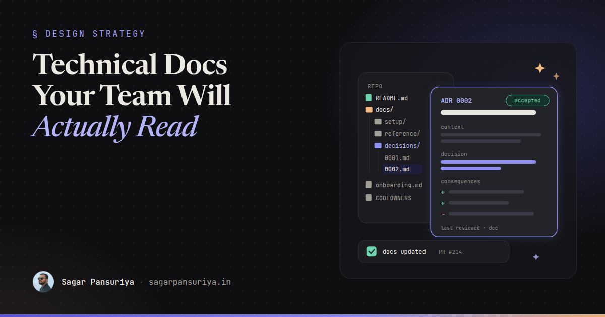
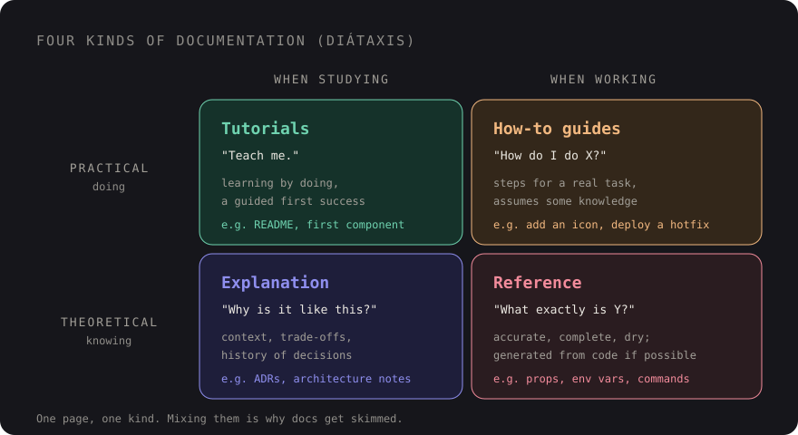

Writing Technical Documentation Your Team Will Actually Read


It's the quiet week between Christmas and New Year. Slack is silent, half the team is offline, and there's finally time to do the thing everyone agreed was important and nobody did all year: write the docs.
You've probably seen how that usually goes. Someone opens the team wiki and finds a page called Architecture Overview, last edited two years ago, describing a queue setup that no longer exists. There's a Getting Started page that stops halfway through. There's a 40-page Google Doc from a kickoff meeting that nobody has opened since. The docs exist. Nobody reads them, because nobody trusts them.
This is a lighter, more reflective post than usual. It's what I've come to believe about documentation after years of leading frontend teams: what's worth writing, where it should live, and how to keep it from rotting the moment you close the tab.
Why docs don't get read
In most teams, the problem isn't that people won't read. Developers read constantly: source code, error messages, Stack Overflow, library docs. They skip your docs for three predictable reasons:
- They're far away. The answer is in a wiki three clicks and one login from where the question came up, which is usually the editor or a pull request.
- They're stale. One wrong instruction teaches people that every page might be wrong, so they stop checking.
- They're the wrong kind. Someone who needs a command gets an essay. Someone who needs to understand a decision gets a list of commands.
Each of those has a fix, and none of them requires writing more.
Put docs next to the code
The single biggest improvement is moving documentation into the repository. Markdown files in the repo
get reviewed in pull requests, versioned with the code they describe, searched by the same tools, and
found by the people who need them. A wiki is somewhere you go. A docs/ folder is somewhere
you already are.
README.md ← start here: what this is, how to run it
CONTRIBUTING.md ← branch naming, PR rules, how to get a review
docs/
├── setup/ ← tutorials and how-to guides
├── reference/ ← env vars, commands, component props
├── decisions/ ← architecture decision records
│ ├── 0001-use-livewire-for-admin.md
│ └── 0002-tailwind-tokens-over-sass.md
└── onboarding.mdThe README has one job: get a new developer from git clone to a working app, and point to
everything else. If it takes more than a screen to do that, the setup is too complicated, and that's
worth fixing in the code rather than documenting around.
Not everything belongs in the repo. Product decisions, meeting notes and anything non-developers need to edit can live elsewhere. But anything that changes when the code changes should sit beside the code.
Four kinds of documentation
The most useful mental model I know for documentation is the Diátaxis framework. It says there are four distinct kinds of documentation, each serving a different need, and most bad docs are two or three of them blended into one page.

| Type | Reader is asking | Frontend example |
|---|---|---|
| Tutorial | "Teach me." | Build your first Livewire component in our codebase |
| How-to guide | "How do I do X?" | Add a new icon to the design system |
| Reference | "What exactly is Y?" | Every prop on <x-button>, every env variable |
| Explanation | "Why is it like this?" | Why we use Alpine stores instead of a global event bus |
You don't need to reorganise everything around this. Just ask, before writing a page, which of the four it is, and keep it to that one. A how-to guide that detours into history gets skimmed. An explanation that turns into a list of commands never explains anything.
For small teams, the order to invest in is usually: a README (a tiny tutorial), a handful of how-to guides for the tasks people ask about most, reference generated from code wherever possible, and explanations in the form of decision records.
Architecture decision records
If I could get every team to adopt one documentation habit, it would be this. An architecture decision record (ADR) is a short file that captures one significant decision: what was decided, why, and what it costs. It's written once, when the decision is made, and never rewritten. If the decision changes, a new ADR supersedes the old one.
ADRs solve the most expensive documentation gap there is: the "why". Code tells you what the system does. It never tells you why it doesn't do the obvious thing, and that's exactly the question every new developer asks, usually right before they "fix" something that was deliberate.
# 0002. Use Tailwind design tokens instead of Sass variables
Date: 2026-03-14
Status: Accepted
Deciders: Frontend team
## Context
Brand colours and spacing are defined in three places: Sass variables,
a JS config for charts, and hardcoded values in Blade. A rebrand is
planned for Q3 and nobody is sure which values are still used.
## Decision
Define all tokens once as CSS custom properties in the Tailwind theme.
Sass is removed. Charts read tokens with getComputedStyle.
## Consequences
+ One source of truth; a rebrand is a single-file change.
+ Tokens are usable in plain CSS, Blade and JS.
- Every Sass partial must be migrated (estimated two sprints).
- Developers need to learn Tailwind's theme syntax.
## Alternatives considered
- Keep Sass, generate a JSON export for JS. Rejected: still two sources.Keep them short. One page is plenty, and half a page is better. The Consequences section is the
one people skip and the one that matters most, because it's honest about the trade-off. Number them, keep
them in docs/decisions/, and link to the ADR from the pull request that implements it.
Onboarding docs are a test suite
Onboarding documentation has a special property: every new hire runs it. That makes it the only doc that gets tested regularly, if you let it.
The habit I recommend: the newest person on the team owns the onboarding doc. They follow it on day one, and every place they get stuck becomes a fix in their first pull request. By the time the next person joins, the doc has been verified against reality. I wrote more about the first weeks themselves in onboarding junior frontend developers in 90 days. The doc is the part that makes those weeks repeatable.
Good onboarding docs answer the questions people are embarrassed to ask: who to ask about what, how deploys work, which Slack channels matter, what "done" means for a ticket, and which parts of the codebase are scary.
Keeping docs fresh
Docs rot for the same reason code rots: nobody owns them and changing them isn't part of the normal workflow. So make it part of the workflow.
- A checkbox in the PR template. "Docs updated, or not needed." It takes a second to tick and it makes the question unavoidable.
- Owners. A
CODEOWNERSentry fordocs/areas means doc changes get reviewed by someone who knows the subject. - Generate reference from code. Command lists, route lists, component props and API schemas drift the fastest. Wherever a tool can produce them from the source, let it.
- Delete ruthlessly. A wrong doc is worse than no doc. If a page is obsolete and nobody will fix it this week, delete it. Git remembers.
- A "last reviewed" line. A date at the top of long-lived pages tells readers how much to trust them, and gives you an easy list of what to review each quarter.
Reviewing docs in pull requests is also a great teaching moment. The same approach that makes code reviews that teach work applies here: ask whether a newcomer would understand the page, not just whether it's technically correct.
Let AI draft, let humans verify
AI coding assistants are genuinely good at the blank-page part of documentation. Point one at a module and ask for a README, a first draft of reference docs for a component library, or an ADR written up from a messy discussion thread. What would take an hour takes minutes.
But treat the output as a draft from a confident new team member who has read the code and attended none of the meetings. It will describe what the code does, often accurately. It will invent the "why" if you let it, and it can't know which behaviour is intentional and which is a bug. So:
- Use AI for structure, summaries and reference. Be sceptical of explanations and rationale.
- Have someone who knows the system read every sentence before merging. Run every command.
- Write ADRs' Context and Consequences yourself. That's the human knowledge the document exists to capture.
There's a nice side effect, too. Docs that live in the repo are exactly the context AI assistants read when they work on your codebase. A clear README and a folder of ADRs make both your new hires and your tools less likely to "fix" deliberate decisions.
A small plan for the quiet week
If you have a few calm days before January, don't try to document everything. Try this instead:
- Run your own README on a clean machine, or ask the newest team member to. Fix every step that fails.
- Create
docs/decisions/and write ADRs for the three decisions people ask "why" about most. - Write how-to guides for the two tasks you explain most often in Slack.
- Add a docs checkbox to your pull request template.
- Delete, or clearly mark as outdated, every wiki page you know is wrong.
That's maybe a day of work. It won't give you a documentation portal. It will give you a small set of docs that are close to the code, the right kind for their reader, and true. That's what gets read.
Happy holidays, and see you in the new year.
Discussion